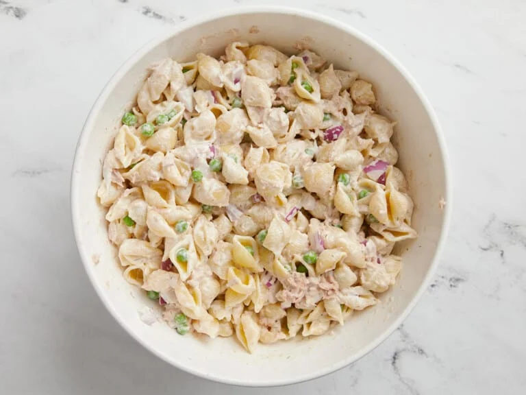

Home
Macaroni Salad

Macaroni Salad is an easy and inexpensive classic for potlucks, summer BBQs, or an easy side dish for dinner.
INGREDIENTS
- ¾ cup mayonaise
- 2 Tbsp lemon juice
- ¼ tsp dried dill
- ¾ tsp salt
- ¼ tsp fenshly cracked black pepper
- ½ cup diced red onion
- 1 cup frozen peas
- 12 oz. mini shell pasta
- 2 5oz. cans chunk light tuna, drained
Instructions
- Make the dressing first. zCombine the mayonnaise, lemon juice, dill, salt, and pepper in a bowl, then set the dressing aside.
- Finely dice the red onion and measure out the frozen peas.
- Bring a large pot of salted water to a boil over high heat. Once boiling, add the pasta and continue to boil until it's almost fully tender (about 5-6 minutes), then add the frozen peas. Continue to cook the pasta and peas together for the last minute or two, or until the pasta is fully tender. Drain the pasta peas well in a colander, allowing them to cool.
- Once the pasta and peas are well drained and mostly cooled, transfer them to a large bowl. Add the diced red oniion, drained tuna, and prepared dressing. Fold the ingredients together until everything is evenly combined and coated in dressing. Serve immediately or refrigerate until ready to eat.
Credit